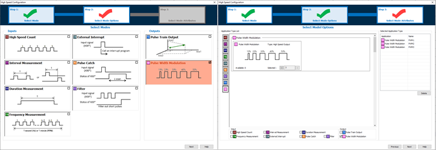
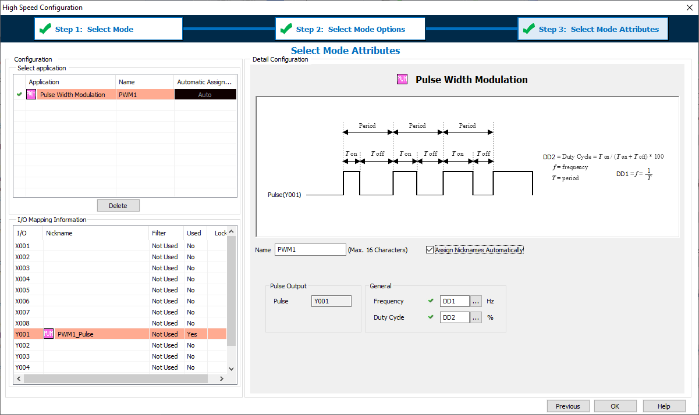

|
|
|
Topic: CL293 |
Pulse Width Modulation |
|
|
Pulse Width Modulation (PWM) is used to Output a square wave with a known Frequency and Duty Cycle. The High Speed I/O Configuration for CLICK PLUS CPUs automatically assigns Inputs and Outputs. This provides the maximum amount of flexibility to the available High-Speed capable Inputs and Outputs. Certain combinations of features are not possible.
Step 1 of the High Speed Configuration the option of PWM can be selected.
Step 2 the number of needed PWM Outputs are selected.
Step 3 the PWM Registers are configured.

|
|
Note: CLICK PLUS digital Inputs and Outputs can only be configured as High Speed when the Option Slot I/O Module is installed in Slot 0 of the CPU (the leftmost slot when facing the CPU). |
|
PWM can only be used with these DC Output modules in Slot0.
| PWM Outputs | |
| Module | Number of supported PWM Outputs |
| C2-14x | up to 3 |
| C2-08x | up to 2 |
The pin assignment for each Pulse Output is fixed and cannot be changed.
| Pulse Output Pin Assignments | |
| Pulse Output | Assignment |
| Y001 | PWM1 |
| Y003 | PWM2 |
| Y005 | PWM3 |

1 Name: This text is used to Prefix Nicknames of addresses used by this configuration.
2 Assign Nicknames automatically: Nicknames can be assigned to each address automatically. If you want to manage the Nicknames manually then disable this feature.
PWM1_Pulse (the Highspeed Output Bit: Y001, Y003, Y005)
PWM1_Frequency (any DDx register)
PWM1_DutyCycle (any DDx register)
3 Pulse: The system will automatically assign the PWM to a High Speed Output.
4 Frequency: This register must be of type DD and contains the setting of the Frequency (0 to 100,000Hz).
5 Duty Cycle: This register must be of type DD and contains the setting of the Duty Cycle (0 to 100%).
There are no ladder instructions to control the PWM Output:
The valid Frequency Range is 0 to 100,000 Hz (Register Value Range 0 to 100,000).
The valid Duty Cycle Range is 0 to 100% with an implied 0.1% resolution (Register Value Range 0 to 1000).
The Output is only enabled while the CPU is in RUN.
These registers can be updated at any time.
A setting of 0% Duty Cycle (Register Value 0) sets the Pulse Output Bit OFF continuously.
A setting of 100% Duty Cycle (Register Value 1000) sets the Pulse Output Bit ON continuously.
If the Pulse Output Bit of the PWM Configuration is duplicated by a ladder Output instruction, an error will occur in [Syntax Check].
|
|
Caution: During the time of a Project Transfer using Runtime Edit the Pulse Output Bit will be set OFF. When the transfer is completed, the PWM will return to operation automatically. |
|
The PWM Output has a resolution of a 1us clock. As the Output Frequency Increases the available Duty Cycle % resolution decreases. Examples:
At 1,000 Hz (and below) the available PWM Range is: 0.1% to 99.9%
At 100,000 Hz the available PWM Range is: 10% to 90%
| Pulse Output Resolution | |||
| Hz | Cycle (t) | Percent Steps | # of Steps |
| 100000 | 0.00001 | 10.0% | 10 |
| 50000 | 0.00002 | 5.0% | 20 |
| 20000 | 0.00005 | 2.0% | 50 |
| 10000 | 0.0001 | 1.0% | 100 |
| 5000) | 0.0002 | 0.5% | 200 |
| 2000 | 0.0005 | 0.2% | 500 |
| 1000 | 0.001 | 0.1% | 1000 |
|
|
Note: The System Bits SC150-SC152 “_PTO_AxisX_Ready_Flag” are not controlled in the PWM mode. |
|
The High Speed Input and High Speed Output features consume the same shared internal resources of the CPU. As features are added into the High Speed Configuration these resources are calculated and the number of available assignments is updated. The following table displays the maximum available Input features as a function of assigned Output features. Not all combinations of features or pin usage are possible.
| Maximum Available High Speed Input Features | |||||||
| C2-14x (8-In/6-Out Module) | C2-8x (4-In/4-Out Module) | ||||||
| PTO or PWM Outputs | 0 Axis | 1 Axis | 2 Axis | 3 Axis | 0 Axis | 1 Axis | 2 Axis |
| Up To # of High Speed Input Features | |||||||
| High Speed Count Up | 6 | 6 | 4 | 1 | 4 | 4 | 2 |
| High Speed Count Down | 6 | 6 | 4 | 1 | 4 | 4 | 2 |
| High Speed Count Up/Down | 3 | 3 | 2 | 0 | 2 | 2 | 1 |
| High Speed Count Pulse/Direction | 4 | 4 | 4 | 1 | 2 | 2 | 2 |
| High Speed Count Quad (AB) | 4 | 4 | 3 | 1 | 2 | 2 | 2 |
| High Speed Count Quad (ABZ) | 2 | 2 | 2 | 1 | 1 | 1 | 1 |
| Interval Measurement Single | 6 | 6 | 4 | 1 | 4 | 4 | 2 |
| Interval Measurement Dual | 3 | 3 | 2 | 0 | 2 | 2 | 1 |
| Duration Measurement | 6 | 6 | 4 | 1 | 4 | 4 | 2 |
| Frequency Measurement Single | 6 | 6 | 4 | 1 | 4 | 4 | 2 |
| Frequency Measurement Quadrature | 4 | 4 | 3 | 1 | 2 | 2 | 2 |
| External Interrupt | 8 | 8 | 8 | 8 | 4 | 4 | 4 |
| Pulse Catch | 8 | 8 | 8 | 8 | 4 | 4 | 4 |
| Filter | 8 | 8 | 8 | 8 | 4 | 4 | 4 |
PTO Error Codes
Home for PTO Axis
Velocity Move for PTO Axis
Position Move for PTO Axis
Pulse Train Output